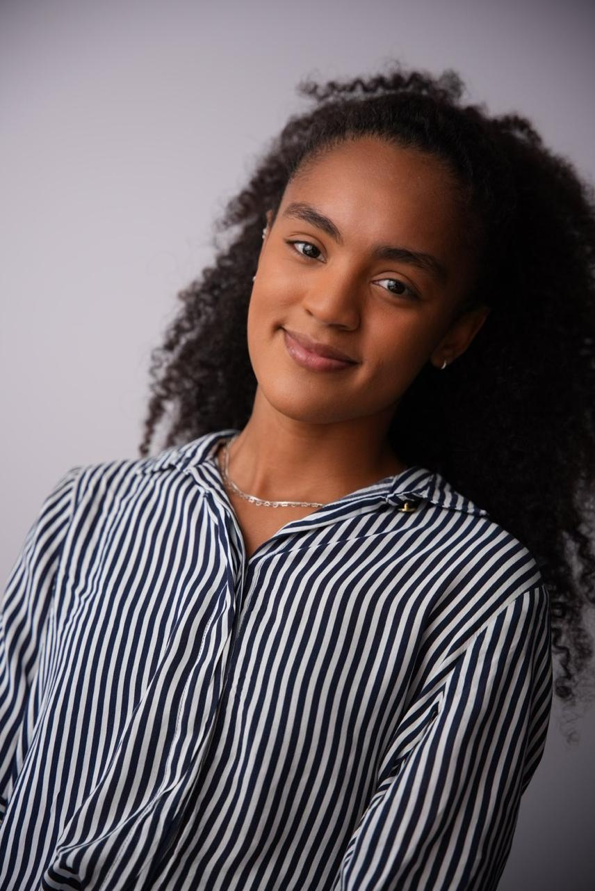

eMuseu das Favelas
Atuei na edição de vídeos para divulgação científica e acervo digital, desenvolvendo narrativas visuais que aproximam o público da memória social das favelas cariocas.
Ver no Site Ver no Instagram
Sou estudante de Biologia na Universidade do Estado do Rio de Janeiro (UERJ), atualmente no 6º período.
Minha trajetória é marcada pelo interesse em conservação, inovação tecnológica e esportes. Busco integrar ciência com ferramentas de gestão como ISO e ESG para atuar na interseção entre meio ambiente, tecnologia e desenvolvimento sustentável.
Atuei na edição de vídeos para divulgação científica e acervo digital, desenvolvendo narrativas visuais que aproximam o público da memória social das favelas cariocas.
Ver no Site Ver no InstagramO GPEO é um grupo de preparação para olimpíadas do conhecimento que promove inclusão educacional por meio de ensino colaborativo. Participei de atividades de mentoria e produção de materiais didáticos para estudantes de escolas públicas, com foco em biologia e ciências da natureza. A iniciativa contribui para a democratização do acesso ao conhecimento de excelência.
Ver no SiteNa HipGlobal, desenvolvi habilidades em análise de viabilidade de projetos, inteligência de mercado e compliance fiscal. Atuei diretamente na estruturação de planilhas gerenciais e na pesquisa sobre mecanismos de incentivo.